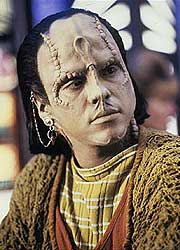
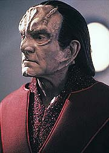
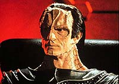
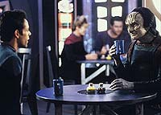

MANCHETE
DO EPISÓDIO
Conflito
entre Bajor e Cardássia dá
combustível à dupla Bashir e Garak
Episódio
anterior | Próximo
episódio
Sinopse:
Data Estelar: 47177.2.
Bashir e Garak estão tendo o seu já
tradicional almoço semanal, quando uma coisa chama a atenção de
Garak. Ele vê um Bajoriano de meia idade e um menino Cardassiano
(de uns 12 anos) em uma mesa próxima. Garak vai até a mesa deles
e oferece os seus cumprimentos ao garoto, quando este o ataca e dá
uma mordida em sua mão. Bashir intervém e separa os dois
enquanto o garoto procura segurança, abraçando o Bajoriano.
Bashir informa o incidente aos outros oficiais no OPS (Centro de
Operações de DS9), e diz também que o Bajoriano está criando o
garoto Cardassiano, como seu próprio filho. Kira diz que ele
provavelmente é um dos órfãos deixados para trás quando os
Cardassianos abandonaram o setor Bajoriano. Dukat chama Sisko pelo
sub-espaço.

Dukat
(para surpresa de Sisko) já soube do incidente entre o garoto e
Garak. Ele insiste que os órfãos Cardassianos estão sendo
criados para odiar a sua própria espécie. Sisko acha que Dukat
está exagerando o incidente, e se oferece para investigar. Dukat
agradece a oferta de Sisko, e diz que o caso dos órfãos o
interessa muito e que ele anseia poder trazer todas estas crianças
de volta a sua terra natal.
(Dukat também demonstra uma estranha preocupação com Garak.)
Sisko e Bashir visitam Proka, o pai adotivo Bajoriano do menino
Cardassiano, Rugal. Proka diz que as suspeitas de Dukat são
infundadas e que ele e sua esposa apenas disseram ao rapaz o que
os Cardassiano fizeram durante a ocupação, deixando que ele
toma-se as suas próprias conclusões. Ele e sua esposa o amam
como se ele fosse DE FATO Bajoriano, sua própria carne e sangue.
Bashir se encontra com Zolan, um empresário alienígena conhecido
da família de Proka. Ele diz que Rugal é vítima de extremo
abuso e que Proka e sua esposa o transformaram em sua "vingança
pessoal" contra os Cardassianos. Proka nega totalmente tais
acusações. Sisko decide por bem transferir provisoriamente a
guarda de Rugal para os O'Brien, enquanto ele determina quem está
dizendo a verdade.
Bashir diz a Garak na enfermaria, que o incidente pode ajudar
Dukat em seu esforço de trazer os órfãos de volta a Cardassia.
- Aparentemente ele (Dukat) estava bastante preocupado com o seu
bem-estar. Você nunca disse que vocês dois eram amigos.
[Bashir]
- Doutor, qual o traço de comportamento que mais representa a mim
e aos meus camaradas Cardassiano? Não seria a nossa atenção por
detalhe? Você acha que nós simplesmente esquecemos destes pobres
órfãos quando deixamos Bajor ? Você acha que eles simplesmente
escorregaram? E quem, você arriscaria, estava encarregado da
retirada Cardassiana de Bajor?
[Garak, rindo como se tivesse ouvido a coisa mais absurda do
mundo.]

Sisko
está falando com Dukat pelo sub-espaço. Sisko vai enviar uma
amostra de DNA de Rugal a Dukat para que este possa verificar se o
garoto ainda possui algum parente vivo. Bashir interrompe a
conversa e pergunta a Dukat se ele foi o responsável pela evacuação
dos Cardassianos de Bajor e por que então ele resolveu deixar os
órfãos para trás. Dukat confirma que foi o responsável pela
evacuação. E diz também que todas as decisões envolvendo a
retirada dos Cardassianos, foram tomadas pelos líderes civis,
decisões sobre as quais ele sempre discordou. Dukat agradece
Bashir pela preocupação e desliga.
Bashir diz que Dukat está mentindo, porém não tem nada em se
que apoiar a não ser na desconfiança de Garak. Sisko está
bastante bravo com Bashir por ele ter interrompido a conversa com
Dukat, e diz para Bashir dizer a Garak, que Garak se apresente a
ele às 21:00 hs.
O'Brien chega em casa e encontra Rugal com um PADD em seu sofá,
enquanto Keiko põe a mesa do jantar. O Chefe está preocupado por
saber que Rugal brincou com a sua filha Molly. O'Brien não faz
muita força em disfarçar o preconceito em relação aos
Cardassianos, preconceito adquirido quando ele lutou contra eles
nas guerras de fronteira. Porém quando todos sentam-se à mesa,
O'Brien e Rugal têm algo em comum, nenhum deles quer comer o
prato típico Cardassiano, que Keiko preparou especialmente para o
seu jovem hóspede.
Tarde na noite, Rugal retorna a sala de estar, enquanto O'Brien
está trabalhando no computador. Rugal diz que considera Bajor a
sua casa e o casal de Bajorianos que o adotaram, os seus pais.
Eles podem odiar Cardassianos, mas não a ele, eles nunca o
maltrataram. O'Brien diz que não podemos fazer generalizações
sobre uma raça inteira e que gostou de ter conhecido Rugal. Rugal
se ressente por ser Cardassiano.
Bashir acorda Sisko e pede um Explorador, pois Garak(que havia
acordado Bashir anteriormente) precisa ir a Bajor mas não quis
dizer o motivo. "- Um explorador será suficiente?", diz
um sarcástico Sisko. Em seguida chega uma nova transmissão de
Dukat. Os Cardassiano descobriram o pai de Rugal, um proeminente
político de nome Kotan Pa'Dar. Pa'Dar acreditava que o filho
tinha morrido em um ataque terrorista em Bajor. Pa'Dar já soube
das boas novas e está a caminho de DS9 para se reencontrar com o
seu filho. Sisko diz que não é tão simples assim, a acusação
de abuso não foi confirmada e o garoto chama Bajor de lar e Proka
de pai. Dukat diz que o reencontro com o verdadeiro pai vai mudar
isto tudo, e desliga. Bashir diz que isto e o pedido de Garak não
podem ser uma simples coincidência. Sisko diz que só existe um
meio de descobrir o que Garak sabe.
Bashir e Garak visitam um (de fato) orfanato na província Tozak,
no planeta Bajor. Bashir diz a supervisora (uma Bajoriana de nome
Deela) que eles procuram informação sobre o processo da adoção
de Rugal por Proka. Deela não reconhece nenhum dos nomes e diz
que não vai ser possível recuperar registros tão antigos. Garak
insiste em que os Cardassianos são meticulosos mantenedores de
registros. Garak diz, com certeza, que detalhados registros
existem daquele tempo.

Os
computadores não funcionam, mas Garak se oferece para consertá-los
(mais uma desconhecida faceta dele). Garak consegue fazer o
computador funcionar mas não acha registro com os nomes de Rugal
ou Pa'Dar. De qualquer forma Garak "baixa" toda a base
de dados da província em um "clip" de dados, mas quando
os dois se viram da frente do terminal dão de cara com um monte
de crianças Cardassianas. Uma menina (Asha) pergunta se eles
vieram para levá-los para Cardassia e Garak responde que ele
lamenta que não. Eles vão embora, com Bashir olhando para trás
um sem-número de vezes.
Na viagem de volta no explorador, Bashir ordena parada total e diz
que quer respostas de Garak. Garak lamenta que Bashir esteja
chateado com a situação dos órfãos, mas crianças sem família
não têm Status algum em Cardassia. Bashir diz que se Garak não
explicar o que estão acontecendo, eles vão ficar ali até
apodrecer.
Garak guia Bashir na "descoberta" de que Pa'Dar, um
grande líder civil, foi responsável pela ordem de evacuação de
Bajor, tornando-o um inimigo político de Dukat. Juntando isto ao
reaparecimento do filho perdido de Pa'Dar e ao imediato e absoluto
interesse de Dukat pelo menino, não resta duvida, Dukat está
envolvido até o pescoço em toda a história.
Pa'Dar, chega a DS9, e vai aos aposentos de O'Brien e fala sozinho
com o Chefe. O'Brien diz que o garoto odeia tudo o que ele é, e
que ele não vai querer voltar para Cardassia. Pa'Dar lamenta
muito, e diz que em Cardassia família é tudo. Abandonando o seu
filho (mesmo sem conhecimento disto) ele arruinou tudo que um
Cardassiano acredita. Keiko entra nos aposentos com Rugal e pai e
filho ficam frente a frente. Mesmo frente às desculpas sinceras
do seu pai biológico, Rugal diz que foi tudo culpa de Pa'Dar, ele
chama o pai de açougueiro e que os Bajorianos mataram o seu filho
pelos crimes dele e corre para o quarto de dormir.
Pa'Dar e Proka discutem no escritório de Sisko, após alguma
conversa com Sisko, eles concordam que o comandante seria um bom
arbitrador na questão. Odo diz a Sisko que Dukat acaba de chegar.
Uma audiência informal de custódia é convocada e Dukat está
presente, "pelas crianças", diz ele. Enquanto Pa'Dar
explica a todos, os acontecimentos envolvendo a suposta morte de
Rugal, Bashir e Garak continuam trabalhando na base de dados
"baixada" por Garak. Garak deduz que o arquivo foi
apagado e (aparentemente por mágica) descobre quem o escreveu
originalmente: Jomat Luson. Luson, chamada pelo sub-espaço diz
que se lembra de Rugal, pois ele era o único menino vivendo no
orfanato naquela época. O mais estranho neste caso é que ele foi
trazido por uma oficial Cardassiana que disse o nome do rapaz para
registro. Esta oficial era ligada ao comando de Terok Nor.
Bashir e Garak entram no recinto da audiência e Bashir, com
permissão de Sisko, começa a questionar as testemunhas. Bashir
pergunta a Pa'Dar se o assunto Rugal já se tornou público em
Cardassia e o que acontecerá com ele se isto vier a acontecer.
Pa'Dar responde que ainda não e que quando isto vier à tona, sua
carreira política será arruinada. Bashir levanta a coincidência
de que está para começar um inquérito em Cardassia sobre o
envolvimento de Cardassianos, na recente tentativa de golpe de
Estado em Bajor, inquérito no qual Dukat é uma testemunha chave.
Dukat sugere que eles retornem ao assunto do órfão e Bashir
concorda. Ele explica o que ouviu de Jomat Luson e diz acreditar
que o órfão foi levado ao orfanato, com conhecimento de que ele
não era um órfão e tal ato foi feita na esperança de um dia
ser usado contra Pa'Dar. A oficial que levou Rugal era ligada ao
comando de Terok Nor. Dukat diz que Terok Nor é o nome
Cardassiano de DS9. Bashir pergunta quem era o comandante de Terok
Nor naquela época. Dukat sem palavras (e saída) se retira do
recinto. Bashir diz para registro que gul Dukat era o comandante
de Terok Nor naquela época.
Sisko dita em seu diário, que tomou a decisão de retornar Rugal
a Pa'Dar.
Pa'Dar diz a Sisko que ele e Dukat chegaram a um "acordo de
cavalheiros" sobre o assunto e que nada virá a público.
Pa'Dar diz dever um favor a Sisko, devido ao ocorrido. Sisko lhe
pergunta se ele pode fazer algo pelos demais órfãos de guerra, e
ele responde vagamente, dando a nítida certeza que este assunto não
lhe interessa. Pa'Dar e Rugal embarcam, sob os olhares de Sisko e
O'Brien, para um difícil recomeço em Cardassia.
Novamente almoçando estão Garak e Bashir:
- A verdade está no olho do observador, doutor. Eu nunca irei
dizer a verdade por que eu não acredito que exista tal coisa. Por
isto é que eu prefiro a simplicidade da linha reta de uma tesoura
cortando tecido.
[Garak sobre a insistência de Bashir em descobrir o que de fato há
entre ele e Dukat.]
- Você nunca vai me dizer, não é?
[Bashir]
- Mas você não precisa que eu te diga nada, doutor. Simplesmente
note os detalhes. Eles estão espalhados como as migalhas em cima
desta mesa que regularmente partilhamos.
[Garak, se retirando e deixando Bashir com mais um quebra-cabeça
insolúvel.]
Comentários:
Histórias entre Cardassianos e Bajorianos vão estar sempre entre
as favoritas porque trazem à tona naturalmente conflito, questões
relevantes, falta de respostas fáceis e deliciosos tons de cinza.
Então, enaltecendo a total falta de "tecnobaboseira" e
"falsa encrenca" do episódio em questão, vamos ao que
interessa...
Cabe salientar inicialmente uma ótima presença de Sisko, com
muita sensibilidade (ou melhor, talvez com muitos diferentes tipos
de 'sensibilidade') o tempo todo. O'Brien (e seu contínuo
desgosto e desconfiança pelos Cardassianos) foi posto para ótimo
uso aqui também.
A sinopse acima descreve bem o papel de Dukat na trama, e o fato
de que ele se "converteu", em apenas uma hora de televisão,
de um altruísta e íntegro "Embaixador pelo retorno dos órfãos
de guerra Cardassianos a sua terra natal" em um homens capaz
de tudo, inclusive usar uma criança de 4 anos, para conseguir uma
vingança pessoal, não deve ser encarado de uma forma leviana. É
razoável supor que Dukat manteve ao longo dos anos, determinados
contatos que pudessem "olhar" por seus interesses em
Bajor, mesmo em sua ausência. Não é também difícil supor, que
um destes contatos fosse o negociante Zolan, que teria dado assim
a informação do ataque a Garak, a Dukat, e depois a mando do
Cardassiano desse um testemunho falso, para forçar o envolvimento
de Sisko, e depois sumir. Se pensarmos ainda melhor, podemos
pensar que foi Dukat quem ordenou que Zolan desse auxílio a Proka
um pouco antes, talvez se preparando para uma futura chantagem ao
Bajoriano. Seja o que for que Dukat e Garak tiveram no passado
(mais sobre isto em "Civil Defense", na terceira
temporada), isto não ficou nada melhor aqui, pois fica claro que
se não fosse Garak, Dukat teria conseguido o seu objetivo.

A
dupla Bashir/Garak (introduzida em "Past
Prologue", da temporada passada) retorna melhor do
que nunca e é a força que move este episódio à frente. A
interação entre o ingênuo, inexperiente e sedento por aventura
Bashir (em seu melhor episódio até então) e o misterioso
alfaiate de DS9 se mostra como sempre muito divertida, ainda assim
sem perder nem um pouco de relevância no contexto da história.
Os diálogos entre os dois são incríveis (como sempre, quando
Garak está envolvido), sendo que uma boa parte destes se encontra
neste artigo. Aprendemos sobre Garak muitos coisas, tais como: ele
conhece muito bem o processo de obtenção de informação
(oficial ou não), ele conhece BEM computadores, ele conhece a
REALIDADE do sistema político Cardassiano, ele ainda possui
contatos em Cardássia (para obter tão rapidamente a informação
sobre Pa'Dar) e ele tem uma história passada com Dukat.
(Não percam mais Bashir e Garak, nesta mesma segunda temporada,
em "The Wire".)
Proka (e sua esposa), Rugal e Kotan Pa'Dar são de fato vítimas
inocentes da situação. Sisko, em sua decisão, tem por objetivo
restaurar a situação de direito se não fosse a interferência
de Dukat. É interessante que Kotan Pa'Dar toma a decisão de
levar Rugal para Cardássia, quaisquer que sejam as conseqüências,
ANTES de Dukat ser desmascarado. E mais, ao final o próprio Kotan
Pa'Dar demonstra pouco interesse pelo assunto dos órfãos como um
todo. Kotan Pa'Dar terá que arrumar algum tipo de desculpa para a
volta de Rugal e COM CERTEZA a vida não será fácil para nenhum
dos dois em Cardássia.
(De fato Sisko tem autoridade para tomar decisões como a deste
episódio. Em "Dax",
da primeira temporada, ele trouxe a juíza Bajoriana como uma
forma de atrasar o processo de extradição de Jadzia Dax.)
A direção do veterano Cliff Bole é excelente. Belos
enquadramentos e pausas abundam de forma a extrair até a última
gota de drama das cenas. Merecem destaque especial: a bela tomada,
'passando' sobre a mesa de Dabo, que introduz o negociante Zolan,
o "encontro dos pratos" de Rugal e O'Brien, um belo
plano do planeta Bajor e as expressões nos rostos de Sisko e
O'Brien quando Rugal deixa DS9 com seu verdadeiro pai.
Belo trabalho do elenco regular especialmente Brooks, Meaney e
acima de todos El Fadil, dando ao seu personagem uma dose extra de
frenético idealismo e ingenuidade.
Chao é posta para bom uso nas cenas com Meaney (é inegável a
boa química entre os dois). Alaimo interpreta Dukat como um herói
de sua própria história, por isto ele é tão interessante. Aqui
ele
consegue dar um ar de credibilidade, que faz o espectador duvidar
se ele está de fato armando alguma, sem ganhar totalmente a sua
confiança no processo, algo nada fácil para um ator. Robinson é
um caso à parte, é simplesmente incrível como ele dá vida a um
personagem tão opaco e enigmático e ao mesmo tempo capaz de
angariar tanta simpatia.
Dentre os demais atores convidados temos um ótimo Robert Mandan
como Kotan Pa'Dar e os demais não comprometem, mas também não
brilham.
Um outro hilário momento é quando Bashir pede um Explorador de
madrugada a Sisko e Sisko responde "Eu estou
esperando...".
Gostei bastante da ambigüidade quanto à reposta da pergunta da
pequena órfã Cardassiana no orfanato Bajoriano. Qual era a
resposta que ela REALMENTE queria ouvir? BRAVO!
Foi bom saber que a recente tentativa de Golpe de Estado
(apresentada nos 3 primeiros episódio desta segunda temporada) em
Bajor (com envolvimento Cardassiano) está tendo repercussões em
Cardássia, embora este seja um ponto não retomado durante a série.
É interessante que os próprios personagens reparem na coincidência
(ou melhor, a conveniência para o funcionamento do episódio em
seus termos) do assunto sobre os "Órfãos Cardassianos"
ser trazido a tona logo agora. A falta de resolução em
definitivo do problema dos órfãos, também fortalece o episódio
como um todo.
Uma pergunta: como Garak sabia que Jomat Luson foi a Bajoriana que
tratou o caso de Rugal? E mais, como Garak a descobriu? É
facilmente consertável, pena que o roteiro não dá nenhuma
explicação e eu não acho correto debitar isto a mais um dos
truques da manga de Garak.
Também não fica claro o cenário do desaparecimento de Rugal e
de como foram os detalhes da obtenção da posse da criança por
parte de Dukat. Entretanto, isso não é necessariamente um
problema do episódio.
"Cardassians" é um excelente episódio que
representa claramente as virtudes de DS9, tratando temas
sofisticados e relevantes com difíceis tons de cinza, como: ódio
racial, problemas com generalizações, o rancor e preconceito de
um povo devastado e mesmo as mais agonizantes questões de um caso
de custódia de filhos. O episódio não oferece respostas fáceis
a nenhuma das questões levantadas e deixa um perene convite a
ponderação após o seu final.
Citações
Garak - "I am no more a
spy than you are ..."
("Eu não sou um espião mais do que você é ...")
Bashir - "... a doctor."
("... um médico.")
Sisko - "So, you deduced that Garak thinks Dukat is lying
about something you're not sure of, and you proceeded to interrupt
my conversation to confront him about whatever that might
be."
("Então, você deduziu que Garak acha que Dukat está
mentindo sobre alguma coisa que você não sabe bem o que é, e
você veio interromper a minha conversa, para confronta-lo sobre lá
o que isto for.")
Bashir - "I'm sorry, Commander."
("Sinto muito, comandante.")
Sisko - "Don't apologize --it's been the high point of my
day. DON'T do it again."
("Não se desculpe --este foi o ponto alto do meu dia. NÃO
faça isto de novo.")
Deela - "I was in the underground."
("Eu estava na resistência.")
Garak - "Really? Perhaps we HAVE met!"
("Mesmo? Talvez tenhamos nos encontrado!")
Garak - "I don't make the rules."
("Eu não faço as regras.")
Bashir - "But you do play the game, don't you,
Garak?"
("Mas você joga o jogo, não joga, Garak?")
Garak - "I believe in coincidence. Coincidences happen
every day. But I don't trust coincidences."
("Eu acredito em coincidências. Coincidências acontecem
todos os dias. Mas eu não confio em coincidências.")
Trivia:
 O episódio conta com a presença de Keiko, Garak e Dukat.
O episódio conta com a presença de Keiko, Garak e Dukat.
Vidal Peterson (Rugal) interpretou o jovem
Romulano D'Tan em "Unification" (quinta temporada da
Nova Geração).
O nome Cardassiano de Deep Space Nine é
"Terok Nor". Dukat foi comandante da estação desde
pelo menos 2362 e foi responsável pela retirada das forças
Cardassianas de Bajor.
Os Cardassianos deixaram muitas de suas crianças
órfãs em Bajor quando de sua retirada. Cidadãos Bajorianos os
criaram como se fossem seus próprios filhos naturais.
Cardassianos são detalhistas ao extremo e não
costumam deixar tarefas inacabadas.
De acordo com Dukat, a decisão de deixar Bajor
foi uma decisão política (a qual os militares se opuseram)
tomada pelo governo civil (bem como a decisão de deixar os órfãos
para trás). Crianças sem pais não têm status algum em Cardássia.
Na prática, em Cardássia o governo civil não
tem controle algum sobre os militares, como seria visto em "Defiant"
(terceira temporada de DS9).
Observem os "Chapéus Esquisitos" que
os alienígenas estão usando em uma mesa do Replimat, quando
chegam Rugal e Proka logo no início do episódio. "Chapéus
Esquisitos": este foi um esforço consciente de Robert
Blackman durante toda a segunda temporada de DS9.
Desde a sua primeira participação em "Past
Prologue", na primeira temporada", os produtores
estavam tentando trazer Garak de volta. Quando Robinson voltou ao
set de filmagem para este episódio, Ira Behr pediu desculpas
pessoalmente por não ter trazido Andy de volta mais cedo.
Ficha
técnica:
História de Gene Wolande &
John Wright
Roteiro de James Crocker
Direção de Cliff Bole
Exibido em 25/10/1993
Produção: 025
Elenco:
Avery Brooks como
Benjamin Lafayette Sisko
René Auberjonois como Odo
Nana Visitor como Kira Nerys
Colm Meaney como Miles Edward O'Brien
Siddig El Fadil como Julian Subatoi Bashir
Armin Shimerman como Quark
Terry Farrell como Jadzia Dax
Cirroc Lofton como Jake Sisko
Elenco convidado:
Rosalind Chao como Keiko O'Brien
Andrew Robinson como Garak
Robert Mandan como Kotan Pa'Dar
Terrence Evans como Proka
Vidal Peterson como Rugal
Dion Anderson como Zolan
Marc Alaimo como Gul Dukat
Sharon Conley como Jomat Luson
Karen Hensel como Deela
Jillian Ziesmer como Asha